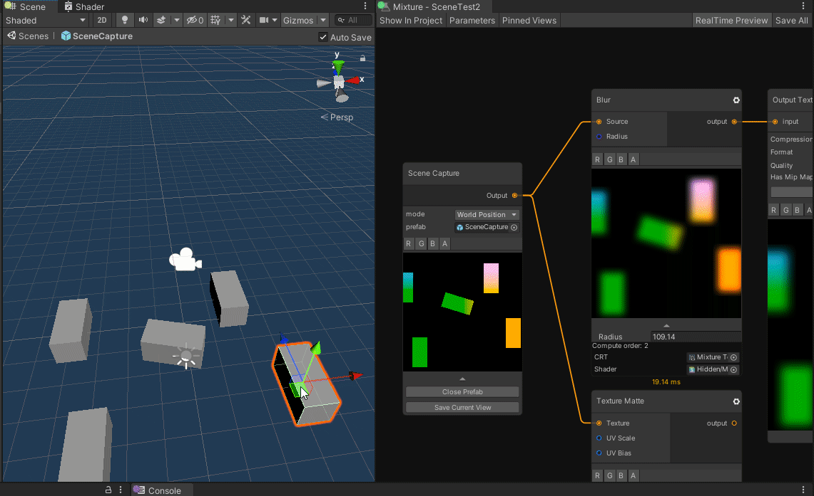

Mixture in HDRP and URP
Mixture is compatible with built-in render pipeline but also HDRP and URP and add a couple of feature related to these pipelines which makes easier to work with certain features.
HDRP
For HDRP, you can use these 3 nodes:

The two first allow you to create a Mask Map and a Detail Map for HDRP materials.
The Prefab Capture node is much more interesting: it allows you to take an image from a camera in a prefab, you can extract different buffers from the camera like in this example where the world position is captured. Please refer to the documentation for more in-depth explanation.

You also have HDRP Mask and Detail map presets in the output texture asset node.

I've been thinking about adding a Mixture Custom Pass to allow you to create complex multi-pass effects without writing a single line of code. If you're interested you can vote on the trello card task.
URP
There is not much to say about the support of URP, but I've been thinking to add a mixture scriptable render pass in URP that would allow you to create multi-pass effects with mixture in realtime. You can vote on the trello card task if you're interested.